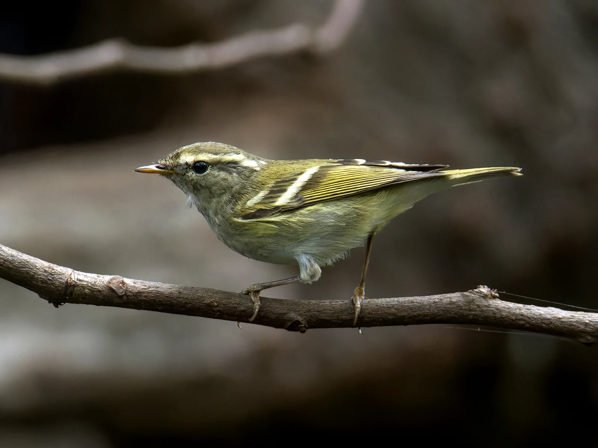

Back to the indexNO. 007 · Songbirds & City Birds / Phylloscopidae · Leaf Warblers
Yellow-browed Warbler
黄眉柳莺 · huáng méi liǔ yīng Phylloscopus inornatusThe busiest little green bird in the canopy
Nine centimetres long and never still. The Yellow-browed Warbler is one of the most numerous winter visitors in South China — that thin, rising 'tseeweet' you hear is almost certainly this one.
Gallery
One scientific illustration for shape and colour blocks, two field photographs for how it looks in real light. Click any image to enlarge.
Identification
- SuperciliumA bold yellow-white supercilium running from the bill to behind the ear-coverts — the source of the name.
- Wing patchTwo clear pale-yellow wingbars, conspicuous perched or in flight, and the key difference from other leaf warblers.
- PlumageUpperparts olive-green, underparts greyish white with a faint yellow wash on the throat; small, light and short-tailed.
- BillFine and pointed, dark above and orange-yellow below — built for picking small insects out of foliage.
Behaviour
Extremely active in the upper and middle canopy, snatching prey on the move and rarely settling. Often alone, or joining mixed flocks of white-eyes and tits. Feeds on small insects and spiders. Arrives in numbers from September and winters throughout, present in almost every patch of broadleaf trees in a city park.
Voice
A thin, rising 'tseeweet', often in two- or three-note variants, fine and metallic. The breeding song is a short trill, occasionally heard here in winter.
Where to find it in Zhuhai
- Xiangshan Lake Park broadleaf woods
- Yeli Island canopy
- SYSU Zhuhai Campus
- estate trees